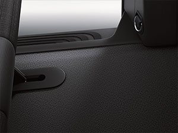

Chegou o Vito, a nova van da Mercedes-Benz.
Para uma melhor experiência, posicione
seu celular/tablet na vertical.
Vito
Chegou o Vito, a nova van da Mercedes-Benz.
Versatilidade no tamanho
que você esperava.
Exterior | Dimensões
Restrições de altura? Impossível entrar em locais baixos? Não para o Vito. O tamanho exclusivo com dimensões compactas fazem do Vito a van ideal para transportar pessoas ou mercadorias até mesmo em locais estreitos e de baixa altura. Garagens subterrâneas? Trânsito intenso? O Vito roda à vontade.
Exterior | Dimensões
Restrições de altura? Impossível entrar em locais baixos? Não para o Vito. O tamanho exclusivo com dimensões compactas fazem do Vito a van ideal para transportar pessoas ou mercadorias até mesmo em locais estreitos e de baixa altura. Garagens subterrâneas? Trânsito intenso? O Vito roda à vontade.
Exterior | CNH B
Todos os condutores com carteira de habilitação do tipo “B” estão prontos para dirigir o Vito. Isso amplia ainda mais as possibilidades de uso do veículo, aumentando sua rentabilidade.

Exterior | Design
Um design criado para mostrar logo de cara que o Vito encara qualquer desafio. Arrojado e com linhas modernas, reforça a sua robustez e proporciona excelente aerodinâmica, o que contribui para a economia de combustível. Disponível em duas cores sólidas: Branco Ártico e Vermelho Piemento. E quatro cores metálicas: Preto Obsidiana, Prata Brilhante, Cinza Grafite e Azul Jaspe.
Exterior | Dimensões
Restrições de altura? Impossível entrar em locais baixos? Não para o Vito. O tamanho exclusivo com dimensões compactas fazem do Vito a van ideal para transportar pessoas ou mercadorias até mesmo em locais estreitos e de baixa altura. Garagens subterrâneas? Trânsito intenso? O Vito roda à vontade.
Exterior | Design
Um design criado para mostrar logo de cara que o Vito encara qualquer desafio. Arrojado e com linhas modernas, reforça a sua robustez e proporciona excelente aerodinâmica, o que contribui para a economia de combustível. Disponível em duas cores sólidas: Branco Ártico e Vermelho Piemento. E quatro cores metálicas: Preto Obsidiana, Prata Brilhante, Cinza Grafite e Azul Jaspe.
Exterior | Para-choque
Uma dianteira diferenciada comprova, à primeira vista, que o Vito pertence à família de vans Mercedes-Benz. E seu design fica ainda mais atrativo optando pelo para-choque na cor do veículo e farol de milha na versão Tourer Luxo.
Exterior | Luzes de Freios Adaptativas
No Vito, segurança é primordial. Por isso, ele foi desenvolvido com luzes de freio adaptativas para evitar colisões traseiras: elas sinalizam uma frenagem de emergência ao condutor do veículo que vem atrás, reduzindo o tempo de reação.
Exterior | Luz de Freios Adaptativas
No Vito, segurança é primordial. Por isso, ele foi desenvolvido com luzes de freio adaptativas para evitar colisões traseiras: elas sinalizam uma frenagem de emergência ao condutor do veículo que vem atrás, reduzindo o tempo de reação.

Exterior | Programa Eletrônico de Estabilidade
A união perfeita entre inovação e segurança. O Vito conta com a mais moderna versão do Programa Eletrônico de Estabilidade exclusivo da Mercedes-Benz, o ESP Adaptativo 9.1i®, que reduz consideravelmente as chances de ocorrência de derrapagem, colisão e capotamento do veículo.
Interior | Acabamento Interno
Um veículo comercial que foi pensado para ser resistente e confortável? Sim, é possível. Ao entrar no Vito já é possível notar o revestimento de alta qualidade e acabamento superior. Além disso, a comodidade e praticidade tornam qualquer percurso relaxante: bancos extremamente confortáveis e amplos, apoios de cabeça, que juntamente com o diferenciado espaço entre as fileiras oferecem excelente acomodação.
Interior | Acabamento Interno
Um veículo comercial que foi pensado para ser resistente e confortável? Sim, é possível. Ao entrar no Vito já é possível notar o revestimento de alta qualidade e acabamento superior. Além disso, a comodidade e praticidade tornam qualquer percurso relaxante: bancos extremamente confortáveis e amplos, apoios de cabeça, que juntamente com o diferenciado espaço entre as fileiras oferecem excelente acomodação.
Interior | Acabamento Interno
Um veículo comercial que foi pensado para ser resistente e confortável? Sim, é possível. Ao entrar no Vito já é possível notar o revestimento de alta qualidade e acabamento superior. Além disso, a comodidade e praticidade tornam qualquer percurso relaxante: bancos extremamente confortáveis e amplos, apoios de cabeça, que juntamente com o diferenciado espaço entre as fileiras oferecem excelente acomodação.
Interior | Câmbio
A transmissão de força do Vito conta com caixas de mudanças manuais de 6 velocidades. Uma relação equilibrada de marchas que resulta em elevado conforto de condução, com baixo nível de ruídos e operação suave, sem vibrações. Tudo feito para uma condução ágil e rentável.
Interior | Motor
O furgão Vito 111 CDI, possui o compacto e eficiente motor diesel OM 622 de 4 cilindros e 1,6 litro de cilindrada, oferecendo 114 cv de potência a 3.800 rpm, com torque máximo de 270 Nm entre 1.500 e 2.500 rpm. O resultado? Otimização do consumo de combustível e um veículo muito mais leve.
No caso da van Vito Tourer 119 o motor disponível é o turbo flex (gasolina e etanol) M274 de 4 cilindros e 2 litros, com 184 cv de potência a 5.500 rpm e torque máximo de 300 Nm entre 1.250 e 4.000 rpm.
Os dois motores do Vito atendem plenamente à norma PROCONVE L6 de emissões veiculares (legislação que regulamenta os veículos da categoria de vans médias), sem a adição de ARLA32.
Interior | Dirigibilidade
O Vito não para de inovar o mundo de vans. Com a direção elétrica você vai dirigir um veículo comercial com o conforto de um veículo de passeio.
Isso porque ela proporciona mais comodidade, aumentando a agilidade e reduzindo os esforços do motorista. Essa assistência elétrica varia progressivamente com a velocidade: à medida que a velocidade diminui, o suporte elétrico aumenta. E você ainda pode contar com mais diferenciais. Todas as versões oferecem regulagem de altura e profundidade do volante e, no Vito Tourer 119 Luxo, volante multifuncional de 3 raios com computador de bordo.
Interior | Dirigibilidade
O Vito não para de inovar o mundo de vans. Com a direção elétrica você vai dirigir um veículo comercial com o conforto de um veículo de passeio.
Isso porque ela proporciona mais comodidade, aumentando a agilidade e reduzindo os esforços do motorista. Essa assistência elétrica varia progressivamente com a velocidade: à medida que a velocidade diminui, o suporte elétrico aumenta. E você ainda pode contar com mais diferenciais. Todas as versões oferecem regulagem de altura e profundidade do volante e, no Vito Tourer 119 Luxo, volante multifuncional de 3 raios com computador de bordo.
Interior | Piso Naval
Cada detalhe do Vito foi projetado para facilitar o seu trabalho e aumentar seu rendimento. O piso do compartimento de carga do Vito Furgão é feito em madeira, aumentando a resistência e facilitando o carregamento e limpeza do veículo.
Interior | Luzes Internas
Tudo para aumentar o conforto dos passageiros. Essa é a premissa do Vito Tourer 119. Por isso, a versão Vito Tourer 119 Luxo possui luzes internas de LED de leitura no compartimento de bagagens e na parte frontal, todas podendo ser controladas pelo motorista.
Interior | Luzes Internas
Tudo para aumentar o conforto dos passageiros. Essa é a premissa do Vito Tourer 119. Por isso, a versão Vito Tourer 119 Luxo possui luzes internas de LED de leitura no compartimento de bagagens e na parte frontal, todas podendo ser controladas pelo motorista.
Interior | Ar-condicionado
Conforto em todas as estações do ano para todos os passageiros, até os mais exigentes. Pode rodar à vontade em qualquer região do país, pois dentro do Vito a temperatura está sempre perfeita.
Interior | Assistente de monitoramento e cansaço (Attention Assist)
Rodar com segurança em qualquer lugar e a qualquer hora. O assistente de monitoramento de cansaço analisa o comportamento do condutor ao volante e, identificando sinais de cansaço ou baixo nível de atenção, um sinal no painel e aviso sonoro recomendam uma pausa ao motorista.

Interior | Assistente de vento lateral (Crosswind Assist)
Debaixo de sol, chuva e até rajadas de vento: o Vito está pronto para trabalhar. O acionamento unilateral dos freios ameniza o efeito de ventos laterais, fazendo com que o veículo permaneça em sua trajetória. O sistema age de maneira autônoma, o condutor notará seu acionamento através de uma mensagem no painel.
Interior | Assistente de vento lateral (Crosswind Assist)
Debaixo de sol, chuva e até rajadas de vento: o Vito está pronto para trabalhar. O acionamento unilateral dos freios ameniza o efeito de ventos laterais, fazendo com que o veículo permaneça em sua trajetória. O sistema age de maneira autônoma, o condutor notará seu acionamento através de uma mensagem no painel.
Interior | Assistente de partida em rampa (Hill Start Assist)
Mais segurança para você, passageiros e cargas. Com este sistema, o veículo se mantém freado em terrenos inclinados, diminuindo a chance de colisão traseira e permitindo arrancadas muito mais suaves.

Interior | Capacidade de carga
Projetado para ser versátil. A excelente capacidade de carga de de 1.225 kg e o amplo compartimento de 6m3 do Vito abrem espaço para transportar qualquer mercadoria.
Interior | Capacidade de carga
E o melhor: sua porta traseira de abertura vertical e baixa altura em relação ao solo e ao amplo vão livre, facilitam a carga e descarga de mercadorias - que também são destaques da van.
Interior | Painel
Assim como todos os outros detalhes, o painel do Vito tem o que você precisa para trabalhar com facilidade. Feito em material de alta qualidade, com comandos modernos e intuitivos, você também conta com suporte para copos, guarda documentos e rádio com entrada USB, Bluetooth e cartão de memoria SD.
Interior | Transporte de passageiros
Tamanho não é documento, mas quando ele é ideal, como o do Vito Tourer 119, a gente precisa falar. A sua capacidade para até 8 pessoas na versão Luxo, e até 9 na versão Comfort, oferece muito mais comodidade.
Mas o Vito Tourer não para de surpreender: materiais de alta qualidade, cintos de segurança de 3 pontos, apoios de cabeça, ar condicionado de série, bancos espaçosos e excelente espaço para bagagens são só alguns dos seus diferenciais.
No compartimento de passageiros, os bancos são de fácil remoção, o que permite mais possibilidades em sua utilização e pode aumentar o espaço disponível para o transporte de bagagens.
No Vito Tourer 119 Luxo, o passageiro também pode desfrutar de bancos em courino, assentos com encostos reclináveis e rebatíveis individualmente, apoio de braço, tomadas 12v e banco para motorista e acompanhante com regulagem total.
Interior | Transporte de passageiros
Tamanho não é documento, mas quando ele é ideal, como o do Vito Tourer 119, a gente precisa falar. A sua capacidade para até 8 pessoas na versão Luxo, e até 9 na versão Comfort, oferece muito mais comodidade.
Mas o Vito Tourer não para de surpreender: materiais de alta qualidade, cintos de segurança de 3 pontos, apoios de cabeça, ar condicionado de série, bancos espaçosos e excelente espaço para bagagens são só alguns dos seus diferenciais.
No compartimento de passageiros, os bancos são de fácil remoção, o que permite mais possibilidades em sua utilização e pode aumentar o espaço disponível para o transporte de bagagens.
No Vito Tourer 119 Luxo, o passageiro também pode desfrutar de bancos em courino, assentos com encostos reclináveis e rebatíveis individualmente, apoio de braço, tomadas 12v e banco para motorista e acompanhante com regulagem total.
Interior | Transporte de passageiros
Tamanho não é documento, mas quando ele é ideal, como o do Vito Tourer 119, a gente precisa falar. A sua capacidade para até 8 pessoas na versão Luxo, e até 9 na versão Comfort, oferece muito mais comodidade.
Mas o Vito Tourer não para de surpreender: materiais de alta qualidade, cintos de segurança de 3 pontos, apoios de cabeça, ar condicionado de série, bancos espaçosos e excelente espaço para bagagens são só alguns dos seus diferenciais.
No compartimento de passageiros, os bancos são de fácil remoção, o que permite mais possibilidades em sua utilização e pode aumentar o espaço disponível para o transporte de bagagens.
No Vito Tourer 119 Luxo, o passageiro também pode desfrutar de bancos em courino, assentos com encostos reclináveis e rebatíveis individualmente, apoio de braço, tomadas 12v e banco para motorista e acompanhante com regulagem total.
Interior | Transporte de passageiros
Tamanho não é documento, mas quando ele é ideal, como o do Vito Tourer 119, a gente precisa falar. A sua capacidade para até 8 pessoas na versão Luxo, e até 9 na versão Comfort, oferece muito mais comodidade.
Mas o Vito Tourer não para de surpreender: materiais de alta qualidade, cintos de segurança de 3 pontos, apoios de cabeça, ar condicionado de série, bancos espaçosos e excelente espaço para bagagens são só alguns dos seus diferenciais.
No compartimento de passageiros, os bancos são de fácil remoção, o que permite mais possibilidades em sua utilização e pode aumentar o espaço disponível para o transporte de bagagens.
No Vito Tourer 119 Luxo, o passageiro também pode desfrutar de bancos em courino, assentos com encostos reclináveis e rebatíveis individualmente, apoio de braço, tomadas 12v e banco para motorista e acompanhante com regulagem total.
Vito
-
Mais detalhes
Resistente, até o último centímetro do seu ótimo espaço interno de 6m3, e prático: possui porta traseira com abertura vertical que facilita carga e descarga de mercadorias.
Destaques:
- Capacidade para 2 acompanhantes mais o motorista
- Vidros elétricos na frente
- Chave com trava central elétrica e Immobilizer
- Direção elétrica e volante com regulagem de altura e profundidade
- Rádio AM/FM com Bluetooth, entrada USB e cartão de memoria SD
- Tomada 12V no console central
- Piso e portas naval no compartimento de carga
- Parede divisória no compartimento de carga
- Revestimento lateral e luz no compartimento de carga
- Cinto de segurança de 3 pontos em todos os assentos
- Programa eletrônico de estabilidade (ESP Adaptativo 9.1i®)
- Assistente de monitoramento de cansaço (Attention Assist)
- Assistente de vento lateral (Crosswind Assist)
- Assistente de partida em rampa (Hill Start Assist)
- Airbag para motorista e acompanhantes
- Luzes de freio adaptativas
Vito Tourer
-
Mais detalhes Tourer Comfort
Comodidade e facilidade na entrada e saída de passageiros e amplo espaço interno estão garantidos nas duas versões: Vito Tourer 119 Comfort 8+1 e Vito Tourer 119 Luxo 7+1.
Destaques:
- Vidros elétricos na frente
- Saídas de ar-condicionado e calefação distribuídas por todo o veículo
- Direção elétrica e volante com regulagem de altura e profundidade
- Rádio AM/FM com Bluetooth, entrada USB e cartão de memoria SD
- Alça de acesso ao salão de passageiros
- Bancos com sistema de fixação de fácil remoção e engate rápido
- Trava para crianças na porta corrediça lateral
- Cinto de segurança de 3 pontos em todos os assentos
- Fixações ISOFIX para cadeiras de crianças em 4 assentos
- Programa eletrônico de estabilidade (ESP Adaptativo 9.1i®)
- Assistente de monitoramento de cansaço (Attention Assist)
- Assistente de vento lateral (Crosswind Assist)
- Assistente de partida em rampa (Hill Start Assist)
- Airbag para motorista e acompanhantes
- Luzes de freio adaptativas
-
Mais detalhes Tourer Luxo
Comodidade e facilidade na entrada e saída de passageiros e amplo espaço interno estão garantidos nas duas versões: Vito Tourer 119 Comfort 8+1 e Vito Tourer 119 Luxo 7+1.
Destaques:
- Saídas de ar condicionado e calefação distribuídas por todo o veículo
- Direção elétrica e volante com regulagem de altura e profundidade
- Volante multifuncional com computador de bordo
- Rádio AM/FM com Bluetooth, entrada USB e cartão de memoria SD
- Luzes internas de LED
- Bancos rebatíveis e reclináveis individualmente em courino com encosto reclinável e apoio para braços
- Bancos com sistema de fixação de fácil remoção e engate rápido
- Rodas de liga-leve R16 (série) e R17 (opcional)
- Para-choque na cor do veículo
- Farol de neblina
- Fixações ISOFIX para cadeiras de crianças em 4 assentos
- Programa eletrônico de estabilidade (ESP Adaptativo 9.1i®)
- Assistente de monitoramento de cansaço (Attention Assist)
- Assistente de vento lateral (Crosswind Assist)
- Assistente de partida em rampa (Hill Start Assist)
- Airbag para motorista e acompanhante
- Luzes de freio adaptativas